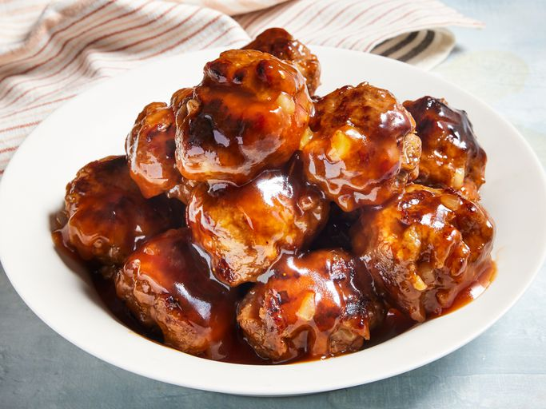

How to make Sweet and Sour Meatballs

Description
Sweet and sour meatballs, a delightful fusion of flavors, offer a quick and nostalgic culinary experience. Whether a childhood favorite, dorm room creation, or a simple pantry staple, these homemade delights, with succulent meatballs in a sweet and tangy sauce, provide a quick and satisfying meal.
Ingredients
Meatballs
- 1 Pound Ground Beef
- 1 Cup Dry Bread Crumbs
- 1 Onion, Chopped
- 1 Egg
- Salt and Pepper, to Taste
Sweet and Sour Sauce
- 1 Cup Brown Sugar
- 1 Cup Water
- 1/2 Cup Ketchup
- 1/2 Cup Cider Vinegar
- 2 Tbsp Soy Sauce
- 2 Tbsp Cornstarch
Steps
- Make meatballs: Mix beef, bread crumbs, onion, egg, salt, and pepper together in a large bowl until well combined.
- Shape mixture into 1 1/2-inch diameter balls.
- Cook meatballs in a large nonstick skillet over medium heat until evenly browned and cooked through.
- Cook meatballs in a large nonstick skillet over medium heat until evenly browned and cooked through.
- Pour sauce over meatballs. Reduce heat to low and simmer until sauce is thick, 3 to 5 minutes.
- Serve hot and enjoy!